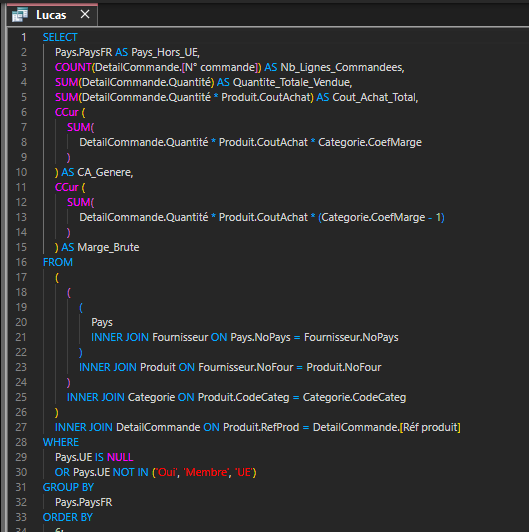
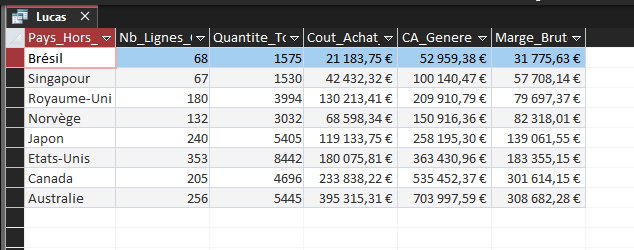
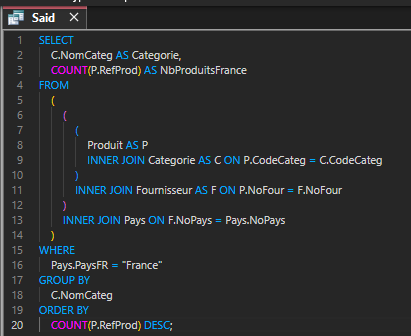
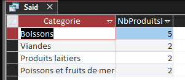
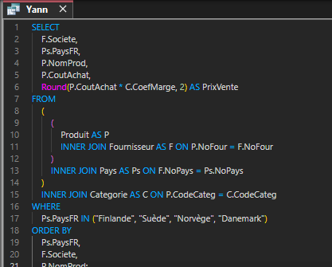
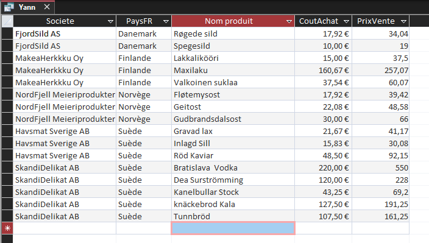
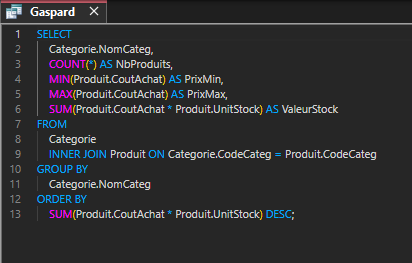
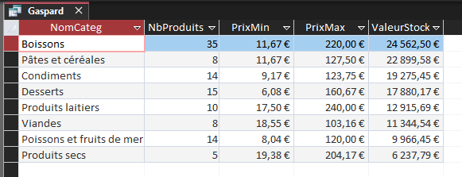

Requêtes personnelles
Lucas — CA et marge brute hors UE
Objectif : Cet indicateur mesure le chiffre d'affaires et la marge brute générés par chaque pays fournisseur hors UE afin d'arbitrer entre gain financier et coût écologique du transport longue distance. Il permet d'identifier les provenances lointaines les moins rentables (comme le Brésil ou Singapour) pour les remplacer prioritairement par des producteurs européens ou français plus éco-responsables


Said — Produits fournis depuis la France
Objectif : Connaître, pour chaque catégorie de produits, le nombre de produits fournis par des fournisseurs situés en France.


Yann — Fournisseurs nordiques
Objectif : Cette requête évalue la place des fournisseurs nordiques dans le catalogue et leur contribution potentielle à la marge. Elle aide à repérer les partenaires selon la diversité de leurs produits ainsi que la différence entre prix de vente et cout d'achat, à décider s’il faut développer ou réduire ces approvisionnements, et à optimiser l’offre.


Gaspard — Valeur du stock par catégorie
Objectif : Mesurer, pour chaque catégorie de produits, l’argent immobilisé en stock, afin de repérer les catégories qui pèsent le plus sur la trésorerie de KDou.

